Standalone C++ RAII wrapper for Fortran fitpack_parametric_surface. More...
#include <fpParametricSurface.hpp>

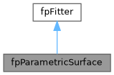
Public Member Functions | |
| fpParametricSurface () | |
| Default constructor - allocates new fitpack_parametric_surface. | |
| ~fpParametricSurface () override | |
| Destructor - deallocates if owned. | |
| fpParametricSurface (const fpParametricSurface &other) | |
| Copy constructor - deep copy. | |
| fpParametricSurface & | operator= (const fpParametricSurface &other) |
| Copy assignment - deep copy. | |
| fpParametricSurface (fpParametricSurface &&other) noexcept | |
| Move constructor - transfer ownership. | |
| fpParametricSurface & | operator= (fpParametricSurface &&other) noexcept |
| Move assignment - transfer ownership. | |
| fpParametricSurface (fitpack_parametric_surface_c &c_wrapper, bool move=false) | |
| Construct from existing C wrapper (takes ownership if move=true) | |
| fpParametricSurface (fitpack_parametric_surface_c &c_wrapper, ViewTag) | |
| Non-owning view ctor: bit-copy the C handle, mark is_pointer=true. Used by parent classes' polymorphic accessors to wrap a base-class handle as the correct concrete subtype. | |
| bool | is_allocated () const override |
| Check if object is allocated. | |
| bool | is_pointer () const override |
| Check if this is a non-owning pointer. | |
| const char * | c_type_name () const override |
| Return the C wrapper struct name for this class (e.g. "fitpack_parametric_surface_c"). | |
| const char * | cpp_type_name () const override |
| Return the fully-qualified C++ class name for this class. Owned by the C++ layer — does not round-trip through Fortran. | |
| fitpack_parametric_surface_c & | c_handle () |
| Get underlying C wrapper (for interop) | |
| const fitpack_parametric_surface_c & | c_handle () const |
| Get underlying C wrapper (const, for interop) | |
| fpFitter & | as_parent () |
| Upcast to parent type (reference, no copy) | |
| const fpFitter & | as_parent () const |
| virtual int32_t | fit (int32_t n, double *smoothing=nullptr, bool *periodic=nullptr, bool *keep_knots=nullptr) |
| fit | |
| virtual int32_t | interpolate (bool *reset_knots=nullptr) |
| virtual int32_t | least_squares (int32_t n, double *u_knots=nullptr, double *v_knots=nullptr, double *smoothing=nullptr, bool *reset_knots=nullptr) |
| least_squares | |
| virtual std::vector< double > | eval (double u, double v, int32_t n_result, int32_t *ierr=nullptr) |
| eval | |
| virtual std::vector< double > | eval (std::vector< double > &u, std::vector< double > &v, int32_t n_result, int32_t *ierr=nullptr) |
| eval | |
| int32_t | comm_size () const override |
| void | comm_pack (std::vector< double > &buffer) const override |
| comm_pack | |
| void | comm_expand (std::vector< double > &buffer) override |
| comm_expand | |
| double | mse () const override |
| int32_t | core_comm_size () const override |
| void | core_comm_pack (std::vector< double > &buffer) const override |
| core_comm_pack | |
| void | core_comm_expand (std::vector< double > &buffer) override |
| core_comm_expand | |
| void | destroy_base () override |
| std::vector< double > | u_vector () const |
| Deep copy of component 'u' as a std::vector. | |
| fxArray< double > | u () const |
| Zero-copy fxArray view of component 'u'. | |
| std::vector< double > | v_vector () const |
| Deep copy of component 'v' as a std::vector. | |
| fxArray< double > | v () const |
| Zero-copy fxArray view of component 'v'. | |
| std::vector< double > | z_vector () const |
| Deep copy of component 'z' as a std::vector. | |
| std::array< int64_t, 3 > | z_shape () const |
| Extents of component 'z', leading dimension first. | |
| fxArray< double > | z () const |
| Zero-copy fxArray view of component 'z'. | |
| std::vector< double > | t_vector () const |
| Deep copy of component 't' as a std::vector. | |
| std::array< int64_t, 2 > | t_shape () const |
| Extents of component 't', leading dimension first. | |
| fxArray< double > | t () const |
| Zero-copy fxArray view of component 't'. | |
| int32_t & | idim () |
| const int32_t & | idim () const |
| int32_t & | nmax () |
| const int32_t & | nmax () const |
 Public Member Functions inherited from fpFitter Public Member Functions inherited from fpFitter | |
| virtual | ~fpFitter ()=default |
| const char * | fortran_type_name () const |
| Return the dynamic Fortran type name of the underlying object. | |
| fitpack_fitter_c & | c_handle () |
| Get underlying C wrapper (for interop) | |
| const fitpack_fitter_c & | c_handle () const |
| Get underlying C wrapper (const, for interop) | |
| std::vector< double > | c_vector () const |
| Deep copy of component 'c' as a std::vector. | |
| fxArray< double > | c () const |
| Zero-copy fxArray view of component 'c'. | |
| std::vector< double > | wrk_vector () const |
| Deep copy of component 'wrk' as a std::vector. | |
| fxArray< double > | wrk () const |
| Zero-copy fxArray view of component 'wrk'. | |
| std::vector< int32_t > | iwrk_vector () const |
| Deep copy of component 'iwrk' as a std::vector. | |
| fxArray< int32_t > | iwrk () const |
| Zero-copy fxArray view of component 'iwrk'. | |
| int32_t & | iopt () |
| const int32_t & | iopt () const |
| double & | smoothing () |
| const double & | smoothing () const |
| double & | fp () |
| const double & | fp () const |
| int32_t & | lwrk () |
| const int32_t & | lwrk () const |
| int32_t & | liwrk () |
| const int32_t & | liwrk () const |
Static Public Member Functions | |
| static fpParametricSurface | make_view () |
| Construct an empty (non-owning) wrapper, for use as a view target. | |
Protected Member Functions | |
| fpParametricSurface (NoAlloc tag) | |
| Protected Member Functions inherited from fpFitter | |
| fpFitter (NoAlloc) | |
| Protected constructor for derived classes (does not allocate) | |
| template<typename T> | |
| T * | as () |
| template<typename T> | |
| const T * | as () const |
Additional Inherited Members | |
| Protected Attributes inherited from fpFitter | |
| fitpack_fitter_c | cobj = fitpack_fitter_c_null |
Detailed Description
Standalone C++ RAII wrapper for Fortran fitpack_parametric_surface.
This class provides automatic memory management (RAII) and a natural C++ API for the underlying Fortran fitpack_parametric_surface, without requiring the fortran-arrays library. Array arguments use std::vector<T> for standalone operation. Extends fpFitter (Fortran: extends(fitpack_fitter))
Constructor & Destructor Documentation
◆ fpParametricSurface() [1/6]
|
inline |
Default constructor - allocates new fitpack_parametric_surface.

◆ ~fpParametricSurface()
|
inlineoverride |
Destructor - deallocates if owned.
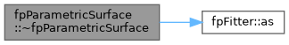
◆ fpParametricSurface() [2/6]
|
inline |
Copy constructor - deep copy.
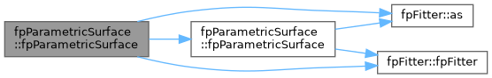
◆ fpParametricSurface() [3/6]
|
inlinenoexcept |
Move constructor - transfer ownership.
◆ fpParametricSurface() [4/6]
|
inlineexplicit |
Construct from existing C wrapper (takes ownership if move=true)

◆ fpParametricSurface() [5/6]
|
inlineexplicit |
Non-owning view ctor: bit-copy the C handle, mark is_pointer=true. Used by parent classes' polymorphic accessors to wrap a base-class handle as the correct concrete subtype.
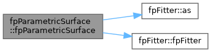
◆ fpParametricSurface() [6/6]
|
inlineexplicitprotected |
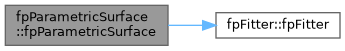
Member Function Documentation
◆ as_parent() [1/2]
|
inline |
Upcast to parent type (reference, no copy)
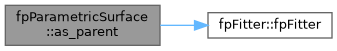
◆ as_parent() [2/2]
|
inline |

◆ c_handle() [1/2]
|
inline |
Get underlying C wrapper (for interop)
◆ c_handle() [2/2]
|
inline |
Get underlying C wrapper (const, for interop)

◆ c_type_name()
|
inlineoverridevirtual |
Return the C wrapper struct name for this class (e.g. "fitpack_parametric_surface_c").
Reimplemented from fpFitter.
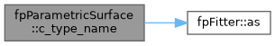
◆ comm_expand()
|
inlineoverridevirtual |
◆ comm_pack()
|
inlineoverridevirtual |
◆ comm_size()
|
inlineoverridevirtual |
◆ core_comm_expand()
|
inlineoverridevirtual |
core_comm_expand
Reimplemented from fpFitter.
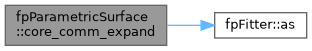
◆ core_comm_pack()
|
inlineoverridevirtual |
◆ core_comm_size()
|
inlineoverridevirtual |
◆ cpp_type_name()
|
inlineoverridevirtual |
Return the fully-qualified C++ class name for this class. Owned by the C++ layer — does not round-trip through Fortran.
Reimplemented from fpFitter.
◆ destroy_base()
|
inlineoverridevirtual |
◆ eval() [1/2]
|
inlinevirtual |
eval
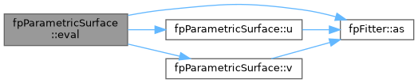
◆ eval() [2/2]
|
inlinevirtual |
eval

◆ fit()
|
inlinevirtual |
fit
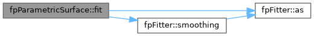
◆ idim() [1/2]
|
inline |

◆ idim() [2/2]
|
inline |
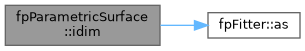
◆ interpolate()
|
inlinevirtual |
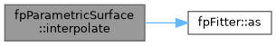
◆ is_allocated()
|
inlineoverridevirtual |
Check if object is allocated.
Reimplemented from fpFitter.
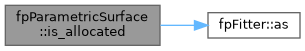
◆ is_pointer()
|
inlineoverridevirtual |
Check if this is a non-owning pointer.
Reimplemented from fpFitter.
◆ least_squares()
|
inlinevirtual |
least_squares
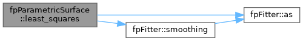
◆ make_view()
|
inlinestatic |
Construct an empty (non-owning) wrapper, for use as a view target.
The returned object has a null handle (cptr==nullptr, is_pointer==false) and does NOT allocate a Fortran object. Intended as a fill target for member-view accessors emitted on parent types — the parent populates the handle with c_loc() into its own storage and sets is_pointer=true.
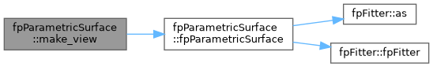
◆ mse()
|
inlineoverridevirtual |
◆ nmax() [1/2]
|
inline |

◆ nmax() [2/2]
|
inline |
◆ operator=() [1/2]
|
inline |
Copy assignment - deep copy.
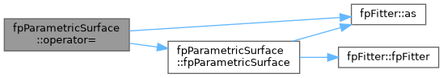
◆ operator=() [2/2]
|
inlinenoexcept |
Move assignment - transfer ownership.

◆ t()
|
inline |
Zero-copy fxArray view of component 't'.
array_c_from_ptr builds the descriptor from the borrowed pointer and bounds, so the view aliases the Fortran storage directly — nothing is copied and writes through t()(i, j) land in the object.
- Note
- Only available when the Fortran-Arrays library is present and enabled (HAVE_FXARRAY).
- Warning
- The view is invalidated by any refit, assignment or destroy call on this object; re-read it rather than retaining it.
◆ t_shape()
|
inline |
Extents of component 't', leading dimension first.
- Returns
- All zeros when the component is unallocated.
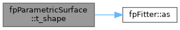
◆ t_vector()
|
inline |
Deep copy of component 't' as a std::vector.
The rank-2 component is flattened COLUMN-MAJOR (Fortran order): element (i, j, ...) — zero-based — is at index i + j * extents[0] + ... Query the extents with t_shape().
- Returns
- An owning copy, empty when the component is unallocated.
◆ u()
|
inline |
Zero-copy fxArray view of component 'u'.
array_c_from_ptr builds the descriptor from the borrowed pointer and bounds, so the view aliases the Fortran storage directly — nothing is copied and writes through u()(i) land in the object.
- Note
- Only available when the Fortran-Arrays library is present and enabled (HAVE_FXARRAY).
- Warning
- The view is invalidated by any refit, assignment or destroy call on this object; re-read it rather than retaining it.
◆ u_vector()
|
inline |
Deep copy of component 'u' as a std::vector.
- Returns
- An owning copy, empty when the component is unallocated.
◆ v()
|
inline |
Zero-copy fxArray view of component 'v'.
array_c_from_ptr builds the descriptor from the borrowed pointer and bounds, so the view aliases the Fortran storage directly — nothing is copied and writes through v()(i) land in the object.
- Note
- Only available when the Fortran-Arrays library is present and enabled (HAVE_FXARRAY).
- Warning
- The view is invalidated by any refit, assignment or destroy call on this object; re-read it rather than retaining it.
◆ v_vector()
|
inline |
Deep copy of component 'v' as a std::vector.
- Returns
- An owning copy, empty when the component is unallocated.
◆ z()
|
inline |
Zero-copy fxArray view of component 'z'.
array_c_from_ptr builds the descriptor from the borrowed pointer and bounds, so the view aliases the Fortran storage directly — nothing is copied and writes through z()(i, j) land in the object.
- Note
- Only available when the Fortran-Arrays library is present and enabled (HAVE_FXARRAY).
- Warning
- The view is invalidated by any refit, assignment or destroy call on this object; re-read it rather than retaining it.
◆ z_shape()
|
inline |
Extents of component 'z', leading dimension first.
- Returns
- All zeros when the component is unallocated.
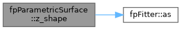
◆ z_vector()
|
inline |
Deep copy of component 'z' as a std::vector.
The rank-3 component is flattened COLUMN-MAJOR (Fortran order): element (i, j, ...) — zero-based — is at index i + j * extents[0] + ... Query the extents with z_shape().
- Returns
- An owning copy, empty when the component is unallocated.
The documentation for this class was generated from the following file: